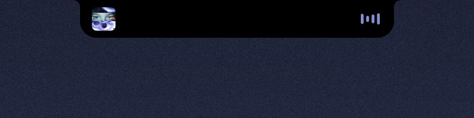
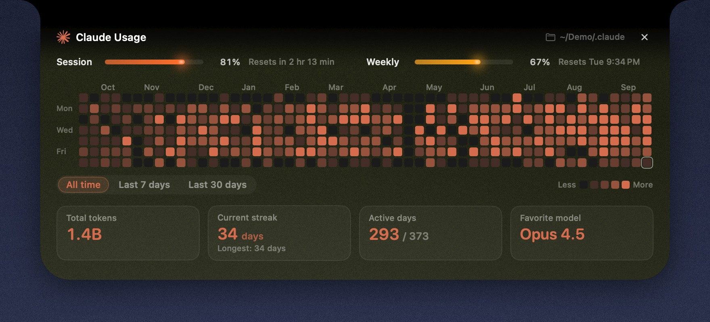
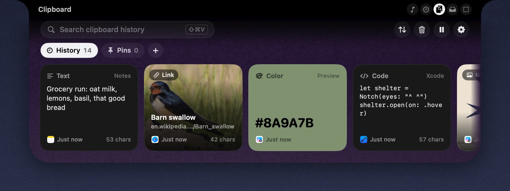
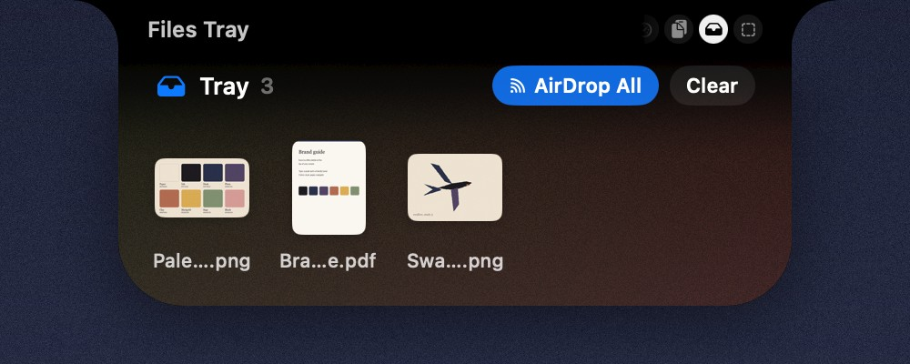
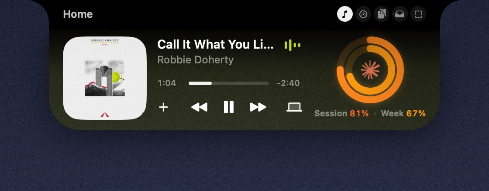

Now playing
The song that’s on, right where you look.
Connect Spotify, and the closed notch shows the album art on one side and bars that move with the music on the other. Hover, and the player widget is waiting in your space.

a little shelter at the top of your screen.
Eave is a notch app for macOS: it lives in your menu bar and turns your MacBook’s notch into a small hub. Glance up for the song that’s playing and how much of your Claude Code session is left. Hover, and it opens into spaces you arrange yourself.
Now playing
Connect Spotify, and the closed notch shows the album art on one side and bars that move with the music on the other. Hover, and the player widget is waiting in your space.

Claude Code
A small ring shows how much of your session is used, and a little animation plays while Claude is working. At 80% and 90% you get a quiet heads-up. When a task finishes, the notch opens with the project, how long it took and the first line of the answer.
Eave also keeps a year of your activity as a heatmap, one square a day.

Clipboard history
Text, links, colors and images, kept in order and one swipe away. Copies from password managers are never read, and you can tell Eave to ignore any other app.
Try it here: copy any line on this page.

File tray
Drag files up to the notch to keep them close, then drag them out wherever they’re needed, or AirDrop them in one move.

Spaces
Each space is a small grid of widgets you place yourself, in the sizes you like. Give a space its own color, texture and a little grain, or let it borrow its colors from the album that’s playing.

They never leave your Mac. History, images and tray files stay in your Library folder, and nothing is uploaded or synced. Copies from password managers are never read, and you can tell Eave to ignore any other app.
A Mac running macOS 14 or later. Eave lives in the menu bar, with no Dock icon.
Yes. On a display without one, Eave sits in a small pill at the top center of the screen.
No. Without them, Eave is still your clipboard history and file tray. Connect Spotify to see what’s playing, and Claude Code for usage, the heatmap and task pop-ups. You can connect them any time in Settings.
Eave needs a few things the App Store’s sandbox doesn’t allow, like talking to the Spotify app, so you download it from here. It’s signed and notarized by Apple.